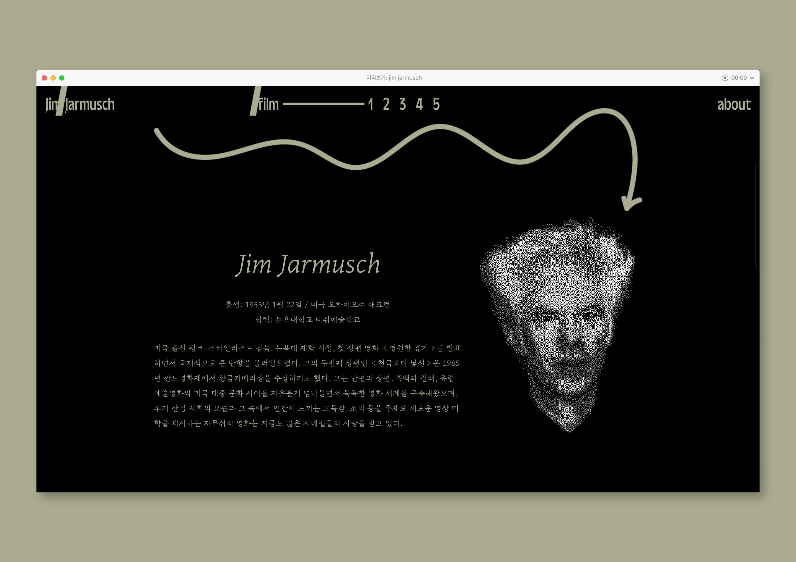
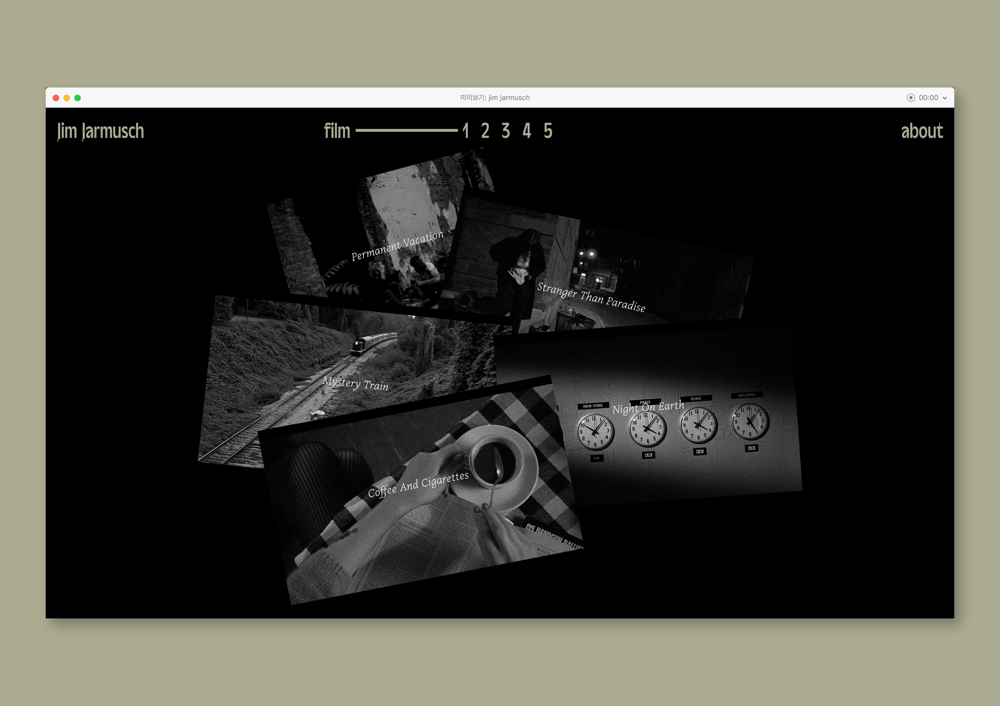
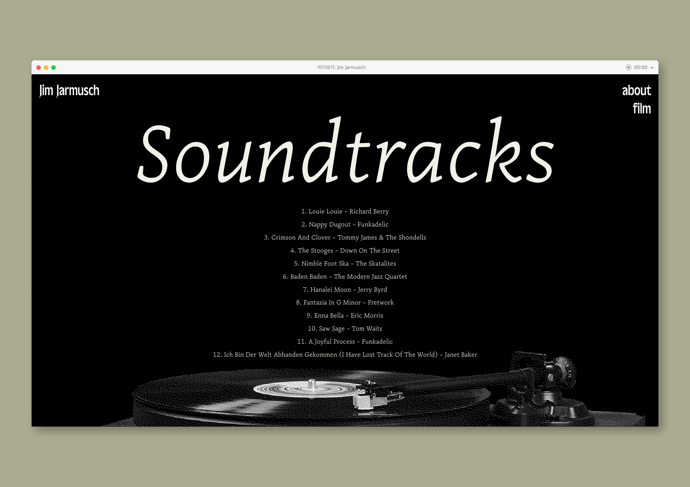
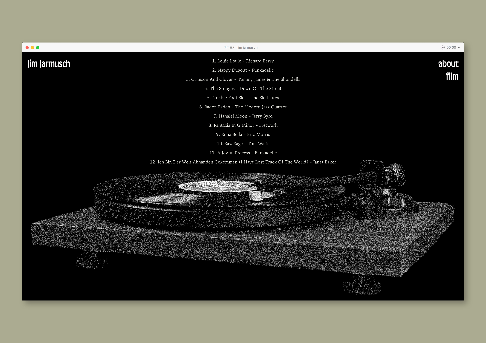
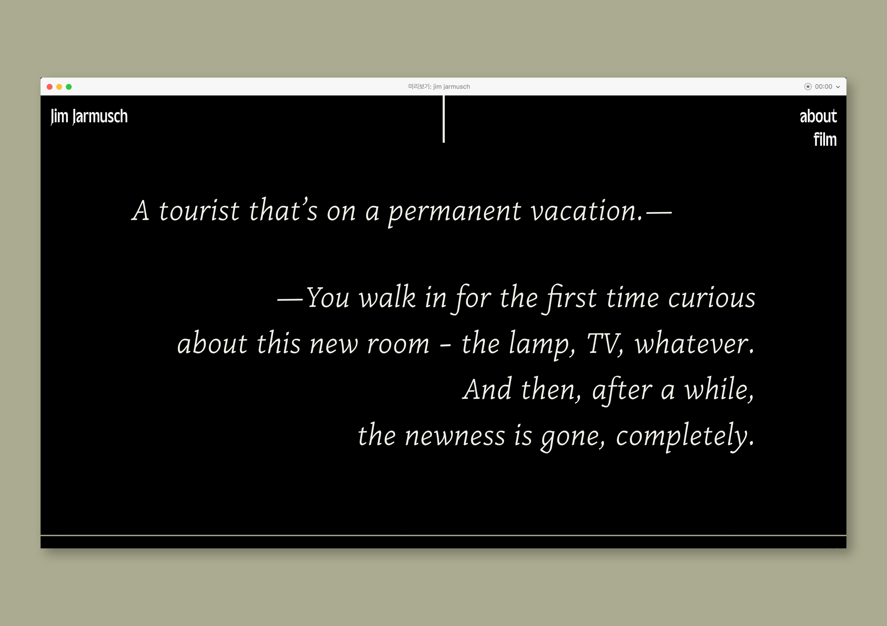
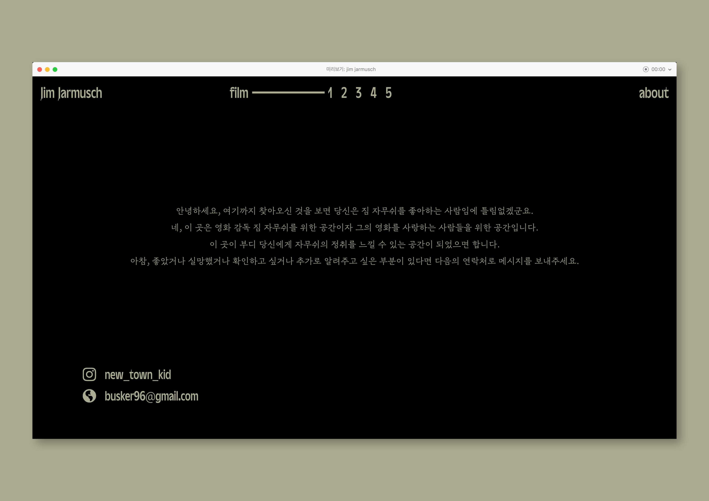

Jim Jarmusch
(2020)
Web Design
1920*1080px
Website for introducing an American film director ‘Jim Jarmusch’. The main page contains a short introduction of him with a simple chart representing his filmography. Main content is organized into five different parts of introducing his five major works, that are <Permanent Vacation>, <Stranger than Paradise>, <Mystery Train>, <Night on Earth>, and <Coffee and Cigarettes>. Each part consists of some images, critics, and soundtrack information.








